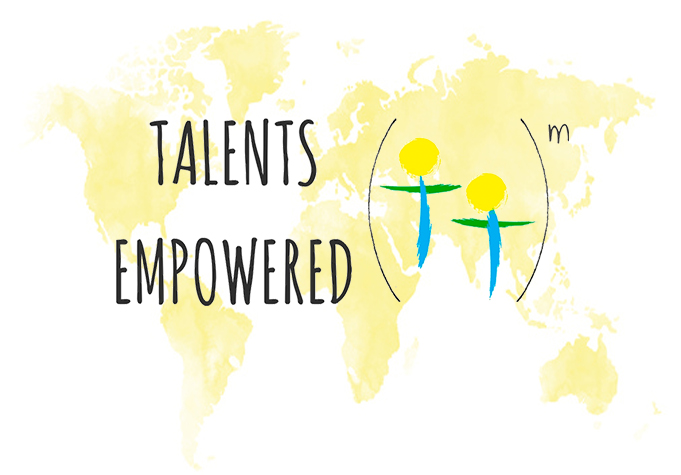

| Home | Angel House | Hope Clinic | Amazima |

The goal of Talents Empowered (TE) is to empower people who demonstrate a great desire to serve and better those around them.
We sponsor three different organizations across the globe. These organizations include: Amazima, Angel House Orphanage, and Hope Clinic.
Talents Empowered provides funding for the Angel House Grassroots orphanage which currently houses, schools, and cares for 72 orphans. Originally, it started as a small building with a big purpose. Since then, it has grown to five buildings including a school, dorms, a computer lab, and a hostel.
Amazima was formed by Kaie Davis and educates as well as houses 800 Ugandan children. TE supports family mentors at Amazima, which are people who live with the students and act as "school parents."
Hope Clinic is a medical/surgical center in the small village of N’Zao, Guinea. Talents Empowered wholeheartedly supports Jon and Anja as they continue to aid their village and honor their friend